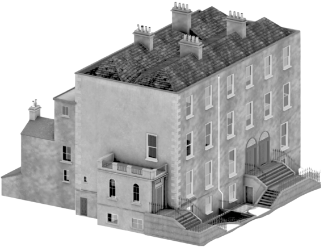

PURE 3D is a virtual research environment for interactive Digital Heritage and Digital Humanities 3D Scholarly Editions

Featured 3D Scholarly Editions
-
 Irish History Easter Rising British History World War I
Irish History Easter Rising British History World War I -
 Diaconie Weeshuis Amsterdam Vlooienburg Virtual Reconstruction
Diaconie Weeshuis Amsterdam Vlooienburg Virtual Reconstruction -
 Dutch design architecture sustainable development
Dutch design architecture sustainable development -
 modern art sculpture ceramic Maarten van Bommel van Dam Reina van Bommel van Dam
modern art sculpture ceramic Maarten van Bommel van Dam Reina van Bommel van Dam -
 Vernacular Architecture Leiden Rembrandt, Mill Cityscape History Architecture Archaeology
Vernacular Architecture Leiden Rembrandt, Mill Cityscape History Architecture Archaeology -
 Petrol Lamp Safety and Hazards dangers in the mining industry
Petrol Lamp Safety and Hazards dangers in the mining industry -
 helmet lamp attachable helmet lamp cap lamp
helmet lamp attachable helmet lamp cap lamp -
 Maastricht religious chapters chapter lords Church of Our Lady Onze Lieve Vrouweplein Claustral Belt
Maastricht religious chapters chapter lords Church of Our Lady Onze Lieve Vrouweplein Claustral Belt